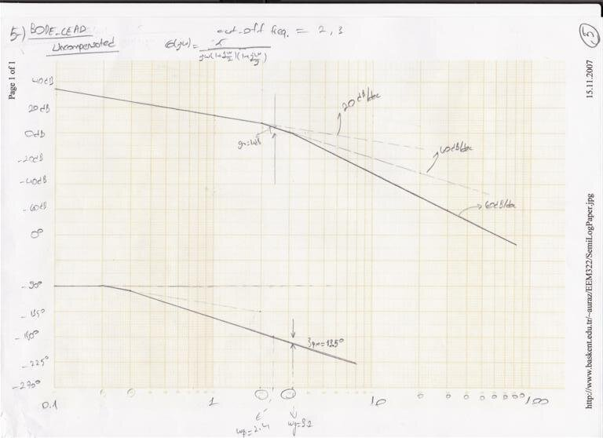

· EEM322
EEM322 Denetim Sistemleri: EEM417 Dengeleyici Tasarımı Ödevi ve MATLAB Projesi (Uraz) – Öğrenci Çözümleri
EEM322 – Denetim Sistemleri · 15.11.2007 · 16.10.2026
Bu yazı, EEM322 Denetim Sistemleri klasörünün "Control" alt klasöründe bulunan bir dengeleyici (kompanzatör) tasarımı ödevini ve bu ödeve ait öğrenci çözümlerini bir araya getiriyor. Ödev kâğıdının başlığı "Başkent Üniversitesi: EEM417 Homework"; yani belge EEM322'nin devamı olan ileri denetim dersine ait, ama aynı klasörde saklandığı için burada yer alıyor. Ödevi dersin öğretim üyesi Prof. Dr. Alper Uraz hazırlamış. Klasörde ödev kâğıdı, iki farklı öğrencinin taranmış el yazısı çözümleri (biri 15.11.2007 tarihli Bode kâğıdı üzerinde), bir öğrencinin MATLAB çıktıları ve bir çözüm parçası vardı; öğrenci adları belgelerde geçmiyor. Bütün dosyalar yazının sonunda ZIP olarak indirilebilir.
Ödev
1. Açık döngü transfer fonksiyonu
G(s) = K / [s(s + a)(s + b)]
olan birim geri beslemeli bir sistem için, a ∈ [1, 3] ve b ∈ [2, 10] olmak üzere aşağıdaki dengeleyici setlerini tasarlayın:
| Set | Tasarımlar |
|---|---|
| A | 1, 2, 5, 6 |
| B | 1, 4, 5, 7 |
| C | 2, 3, 5, 6 |
| D | 3, 4, 5, 6 |
| E | 1, 2, 5, 7 |
| F | 1, 4, 5, 6 |
| G | 2, 3, 5, 7 |
Tasarımlar: 1 – RL-LEAD (kök yer eğrisiyle faz ilerleten), 2 – RL-LAG (kök yer eğrisiyle faz geciktiren), 3 – RL-PD, 4 – RL-PI, 5 – BODE-LEAD, 6 – BODE-LAG, 7 – BODE-PI. İstenen özellikler (uygulanabildiği yerde): ζ = 0.5, ωn = 4, Kv = 5 ve pm = 40°.
2. (a) Kök yer / Bode diyagramlarını elle çizin, (b) dengelenmiş ve dengelenmemiş sistemlerin birim basamak yanıtlarını bulun.
3. MATLAB projesi: 1. soruda yapılacak tasarımın her adımı için MATLAB kodu verin; 2. soruda istenen, dengelenmemiş ve dengelenmiş sistemlerin bütün çizimlerini ekleyin. Ödevler ve MATLAB projeleri 11. haftanın cuma gününe kadar teslim edilecek.
Her öğrenciye bir ödev numarası veriliyordu; tabloda numaraya göre a, b ve set şöyle dağılıyor: 1–8 numaralarda a = 1.0, 9–16'da a = 1.2, 17–24'te a = 1.5, 25–32'de a = 1.8, 33–36'da a = 2.0; b her grupta 2'den 9'a kadar birer artıyor (33–36'da 2, 3, 4, 5) ve setler A'dan G'ye sırayla dönüyor (1 → A, 2 → B, … 7 → G, 8 → A, …, 36 → A).
Birinci öğrenci çözümü: a = 1, b = 2 (Set A)
Sistem G(s) = K / [s(s + 1)(s + 2)] (ödev no. 1, Set A: RL-LEAD, RL-LAG, BODE-LEAD, BODE-LAG). Her tasarımda Kv = lim(s→0) sG(s) = K/2 = 5 ⇒ K = 10.
RL-LEAD
- İstenen kapalı döngü kutupları: −ζωn ± jωn√(1 − ζ²) = −2 ± j4√0.75 = −2 ± j3.46.
- Açı koşulu çözümde −tan⁻¹(3.46/−2) − tan⁻¹(3.46/−1) − 90° = +60° + 74° − 90° = 44° olarak hesaplanmış.
- Bu 44° iki eşit parçaya (22° + 22°) bölünerek sıfır ve kutup yerleştirilmiş: tan 8° = a/(2√3) ⇒ a = 0.48, tan 52° = b/(2√3) ⇒ b = 4.43.
- Sonuç: 1/T = 2.48 (T = 0.403), 1/(aT) = 6.43, a = 0.38 ⇒ Gc(s) = (s + 2.48)/(s + 6.43).
Not: Açı koşulunda işaret hatası var. s = −2 + j3.46'da kutupların açıları 0'dan 120°, −1'den 106.1°, −2'den 90°'dir; toplam faz −316.1°, yani gerekli açı katkısı 136°'dir (44° değil). Bu kadar büyük bir eksik tek kademeli faz ilerleten dengeleyiciyle sağlanamaz; tasarlanan (s + 2.48)/(s + 6.43) yalnız yaklaşık 44° ekler.
BODE-LEAD
- Çizimlerden gm = 10 dB, pm = 27° okunmuş. Gereken ek faz 40° − 27° = 13°, 5° güvenlik payıyla φm = 18°.
- sin 18° = (1 − a)/(1 + a) = 0.309 ⇒ a = 0.53; 10 log a = −2.75 dB ⇒ ωm = 2.72 rad/s.
- 1/T = √a·ωm = 1.98, 1/(aT) = 3.74 ⇒ Gc(s) = a(1 + Ts)/(1 + aTs) = 0.53(1 + 0.5s)/(1 + 0.265s) = (s + 2)/(s + 3.7).
- Yeni faz payı ωm = 2.72'de hesaplanmış: pm′ = 180° − 90° − 69.8° − 36.3° = −16.1°; kuvvetlendirici kazancı Kc = 1/a = 1.89.
Not: K = 10 iken sistem zaten kararsızdır: s³ + 3s² + 2s + K için kritik kazanç 6'dır. Tam hesapla faz kesim frekansı √2 rad/s ve kazanç payı ≈ −4.4 dB, faz payı negatiftir; "gm = 10 dB, pm = 27°" okuması hatalı. Çözümün kendi bulduğu pm′ = −16.1° da tek faz ilerleten dengeleyicinin bu özellikleri sağlayamadığını gösteriyor.
BODE-LAG
- G(s) = 10/[s(s + 1)(s + 2)] = 5/[s(1 + s)(1 + s/2)], 20 log 5 = 13.9 dB.
- pm = 40° + 5° (güvenlik) = 45°. ωg′ = 0.45 rad/s'de 21 dB zayıflatma gerekir ⇒ b = 10^(21/20) = 11.2.
- 1/T = ωg′/10 = 0.045, 1/(bT) = 0.004 ⇒ Gc(s) = (1/11.2)(s + 0.045)/(s + 0.004).
- Yeni faz payı çözümde pm′ = 180° + tan⁻¹(ωg′/0.045) − tan⁻¹(ωg′/0.004) = 180° + 84.3° − 89.5° = 174.8° olarak yazılmış.
Not: Yeni faz payına sistemin kendi fazı da katılmalıdır: ωg′ = 0.45'te ∠G = −90° − 24.2° − 12.7° = −126.9°, dengeleyicinin katkısı ≈ −5.2°; dolayısıyla pm′ ≈ 180° − 126.9° − 5.2° ≈ 48°'dir (istenen 40°'yi sağlar).
İkinci öğrenci çözümü: a = 2, b = 3 (Set F)
Sistem G(s) = K / [s(s + 2)(s + 3)] (Set F: RL-LEAD, RL-PI, BODE-LEAD, BODE-LAG). Kv = K/(2·3) = 5 ⇒ K = 30. Çözüm Türkçe açıklamalı; Bode çizimi dersin web sayfasındaki yarı logaritmik kâğıda (SemiLogPaper) 15.11.2007 tarihinde basılmış.
1) RL-LEAD
- İstenen kutuplar −2 ± j2√3. Açı koşulu: θ = −(180° − 60°) − 90° − 73.9° = −283.9° ⇒ gereken açı φ = 103.9°.
- Açıortay yapısıyla dengeleyicinin sıfırı −0.6, kutbu −26.6 bulunmuş: C(s) = (s + 0.6)/(s + 26.6).
- Genlik koşulu |Kc·G(s)·C(s)| = 1 (s = −2 + j2√3'te) ⇒ Kc = 11.
4) RL-PI
RL-LEAD ile bulunan dengelenmiş sisteme bir PI dengeleyici eklenmiş: Cpi(s) = Kp + Ki/s = Kp(s + Ki/Kp)/s. Açı katkısı küçük olsun diye sıfır orijine yakın seçilmiş (Ki/Kp = 0.1). Genlik koşulundan Kp = 4942.5/4862.095 ≈ 1.02 ⇒ Cpi(s) = 1.02(s + 0.1)/s.
5) BODE-LEAD
- G(jω) = 30/[jω(jω + 2)(jω + 3)] = 5/[jω(1 + jω/2)(1 + jω/3)], köşe frekansları 2 ve 3.
- Dengelenmemiş Bode diyagramından pm = 13.5°, gm = 4 dB okunmuş.
- Adım 1: φm = (40° − 13.5°) + 5° = 31.5°; sin φm = (1 − a)/(1 + a) = 0.52 ⇒ a = 0.32.
- Adım 2: 10 log a = −5 dB olan frekans Bode diyagramından ωm = 3.8 rad/s.
- Adım 3: 1/T = √a·ωm = 2.15, 1/(aT) = 6.72; C(s) = (s + 2.15)/(s + 6.72).
- Adım 5: Kc = 1/a = 3.125 ⇒ Kc·C(s) = 3.125(s + 2.15)/(s + 6.72).
- Adım 6: pm′ = 180° + ∠C(jωm)G(jωm) = 180° + 60.5° − 29.5° − 90° − 62.2° − 51.7° ⇒ pm′ = 7.1°.

Not: K = 30, bu sistemin kritik kazancına eşittir (s³ + 5s² + 6s + K için Routh: K = 5·6 = 30); tam hesapla dengelenmemiş sistemde pm = gm = 0 ve kesim frekansı √6 ≈ 2.45 rad/s'dir. pm = 13.5° ve gm = 4 dB asimptot diyagramından okunmuş. Bulunan pm′ = 7.1° istenen 40°'nin çok altında kalıyor; yani tek kademeli faz ilerleten dengeleyici bu özellikleri sağlamıyor.
6) BODE-LAG
- pm′ = 40° + 5° = 45°; Bode diyagramında fazın −135° olduğu frekans yeni kazanç kesim frekansı alınmış: ωg′ = 0.72 rad/s. Genlik diyagramından bu frekansta 16 dB okunmuş.
- 20 log b = 16 dB ⇒ b = 10^(16/20) = 6.3; 1/T = ωg′/10 = 0.073, 1/(bT) = 0.012.
- C(s) = (1/b)(s + 1/T)/(s + 1/(bT)) = 0.16(s + 0.073)/(s + 0.012).
Not: Tam hesapla fazın −135° olduğu frekans ω² + 5ω − 6 = 0 denkleminden ω = 1 rad/s'dir ve orada |G| ≈ 12.6 dB'dir; 0.72 rad/s ve 16 dB asimptot diyagramından okunmuş değerlerdir (asimptotik genlik 0.72'de 16.8 dB).
MATLAB çıktıları: a = 1.2, b = 2 (Set B)
Üçüncü bir öğrencinin Word'e aktarılmış MATLAB çıktıları ödev no. 9'a (a = 1.2, b = 2, Set B: 1, 4, 5, 7) ait. Kv = K/(1.2·2) = 5 ⇒ K = 12:
>> num=[0,0,0,12];
>> den=[1,3.2,2.4,0];
>> G=tf(num,den)
Transfer function:
12
---------------------
s^3 + 3.2 s^2 + 2.4 s
>> rlocus(G)
>> gridKök yer eğrisinde (1-RL-lead ve 4-RL-PI dosyalarında aynı çizim) gerçek eksendeki kutuplar −1.2, −2 ve 0 işaretlenmiş. Aynı sistem bode(G) ile çizildiğinde (5 ve 7 numaralı dosyalar, ikisi de "Bode-Lead – Uncompensated" başlıklı) MATLAB şu payları veriyor:
Gain Margin (dB): -3.88 At frequency (rad/sec): 1.55 Closed Loop Stable? No
Phase Margin (deg): -11.7 Delay Margin (sec): 3.17 At frequency (rad/sec): 1.92 Closed Loop Stable? NoYani K = 12 ile dengelenmemiş kapalı döngü kararsız (kritik kazanç 3.2 × 2.4 = 7.68).
Çözüm parçası: Bode ile faz ilerleten dengeleyici
"kontrol1" adlı taramada, hocanın el yazısıyla başka bir sistem için Bode-lead tasarımının bir bölümü var:
- Tasarım özellikleri: pm = 45°, ess ≤ 0.4. ess = lim(s→0) sR(s)·1/(1 + G(s)) = 10/K = 0.4 ⇒ K = 25.
- Çizimlerden gm = 5 dB, pm = 14°, ωp = 3, ωg = 2.2. Gereken ek faz 45° − 14° = 31°, 5° eklenerek 36°.
- sin 36° = (1 − a)/(1 + a) = 0.6 ⇒ a = 0.25; 10 log a = −6 dB ⇒ ωm = 3.1 rad/s.
- 1/T = √a·ωm = 1.55, 1/(aT) = 6.2.
- Faz ilerleten dengeleyici: Gc(s) = a(1 + Ts)/(1 + aTs) = 0.25(1 + 0.65s)/(1 + 0.16s) = (s + 1.55)/(s + 6.2).
Not: sin 36° = 0.588'dir; a = (1 − 0.588)/(1 + 0.588) ≈ 0.26 çıkar, çözümdeki 0.6 ve 0.25 yuvarlanmış değerlerdir.